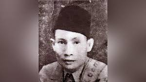
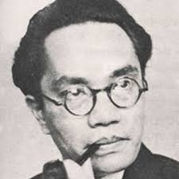
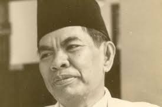
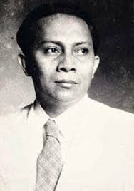
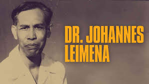
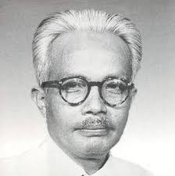
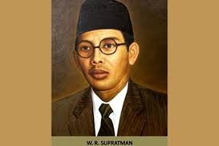
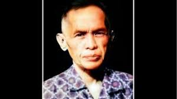
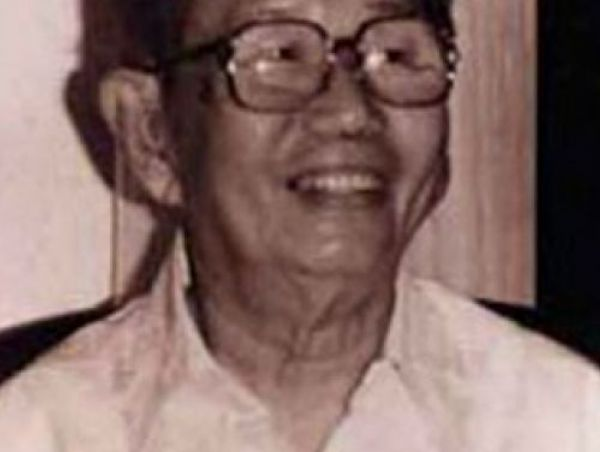

Sumpah Pemuda merupakan ikrar kebangsaan yang dirumuskan melalui sebuah putusan Kongres Pemuda Kedua di Jakarta pada 27-28 Oktober 1928. Ikrar ini adalah pernyataan kebangsaan pemuda pemuda Indonesia dari berbagai latar belakang daerah, suku, dan agama, menyatukan keyakinan mereka bahwa tumpah darah, bangsa, dan bahasa persatuan: ialah Indonesia. Keyakinan itu lalu disebarluaskan untuk dijadikan asas bagi semua perkumpulan kebangsaan Indonesia setelah peristiwa Kongres Pemuda Kedua.
LATAR BELAKANG
Penjajahan Belanda: Indonesia berada di bawah kekuasaan kolonial Belanda selama lebih dari tiga abad. Penindasan dan eksploitasi yang dialami oleh rakyat Indonesia mendorong munculnya semangat nasionalisme.
Kesadaran Nasional: Pada awal abad ke-20, muncul kesadaran nasional di kalangan pemuda Indonesia. Mereka mulai menyadari pentingnya persatuan dan identitas nasional dalam menghadapi penjajahan.
Organisasi Pemuda: Berbagai organisasi pemuda mulai bermunculan, seperti Jong Java, Jong Sumatra, dan Jong Celebes. Organisasi ini berfungsi sebagai wadah untuk memperjuangkan kepentingan bersama dan menjalin solidaritas antar daerah.
Kongres Pemuda II: Kongres ini dihadiri oleh berbagai perwakilan pemuda dari seluruh Indonesia. Mereka berkumpul untuk membahas masa depan bangsa dan merumuskan satu suara tentang cita-cita kemerdekaan.
Rasa Persatuan: Melalui Sumpah Pemuda, para pemuda menyatakan tekad untuk bersatu sebagai satu bangsa, satu tanah air, dan satu bahasa, yaitu Bahasa Indonesia. Ini menjadi simbol penting dalam perjuangan menuju kemerdekaan.
TOKOH PENTING SUMPAH PEMUDA
1.SEONARIO SASTROWARDOYO
Pemuda asal Madiun, Jawa Timur ini merupakan mantan pengurus Perhimpunan Indonesia (PI) di Belanda dan pencetus Manifesto 1925. Ketika kembali ke Indonesia, ia berperan dalam pembentukan organisasi Jong Indonesia di Bandung.
Dalam Kongres Pemuda II, ia mengambil peran sebagai penasehat panitia. Ia turut menjadi pembicara pada rapat ketiga kongres dan menyuarakan pentingnya semangat nasionalisme dan dem

2.SOEGONDO DJODJOPOESPITO
Pemuda kelahiran Tuban, Jawa Timur, ini dipercaya sebagai ketua Kongres Pemuda II yang bertugas memimpin jalannya seluruh kegiatan rapat. Soegondo dikenal sebagai aktivis pendidikan dan anggota dari Persatuan Pemuda Indonesia (PPI).

3.AMIR SYARIFFUDIN HARAHAP
asal Medan, Sumatera Utara ini menjabat sebagai bendahara Kongres Pemuda II. Amir merupakan tokoh yang sangat aktif dalam pergerakan pemuda dan politik pada masa itu. Ia pernah menjabat sebagai Perdana Menteri Indonesia pada periode 1947-1948.

4.MOHAMMAD YAMIN
Tokoh pemuda asal Minangkabau, Sumatera Barat ini menjabat sebagai sekretaris Kongres Pemuda II. Mohammad Yamin dikenal memiliki talenta yang lengkap sebagai seorang sastrawan, sejarawan, budayawan, politikus, dan ahli hukum.
Ia merupakan salah satu tokoh yang mengusulkan agar Bahasa Indonesia menjadi bahasa persatuan

5.DJOKO MARSAID
Djoko Marsaid adalah tokoh pemuda asal Jawa Barat yang menjabat sebagai ketua panitia perumusan Sumpah Pemuda. Ia adalah seorang aktivis pemuda yang sangat bersemangat dalam memperjuangkan kemerdekaan Indonesia.

6.JOHANNES LEIMENA
Johannes Leimena adalah tokoh pemuda asal Maluku. Ia menjabat sebagai ketua panitia konsumsi Kongres Pemuda II. Johannes Leimena adalah seorang tokoh yang sangat aktif dalam pergerakan pemuda dan politik pada masa itu.
Ia pernah menjabat sebagai Wakil Perdana Menteri Indonesia pada periode 1957-1959.

7.SARMIDI MANGOENSARKORO
armidi Mangoensarkoro adalah tokoh pemuda asal Jawa Timur. Ia menjabat sebagai ketua panitia pendahuluan Kongres Pemuda II. Sarmidi merupakan seorang tokoh yang sangat aktif dalam pergerakan pemuda dan pendidikan pada masa itu.
Ia pernah menjabat sebagai Menteri Pendidikan dan Kebudayaan Indonesia pada periode 1949-1950.

8.WAGE RUDOLF SUPRATMAN
Wage Rudolf Supratman adalah tokoh pemuda asal Jawa Barat. Ia adalah pencipta lagu Indonesia Raya. Kongres Pemuda II merupakan momen perdana ketika lagu Indonesia Raya dikumandangkan.

9.Sekarmadji Maridjan Kartosoewirjo
Sekarmadji Maridjan Kartosoewirjo punya peran penting dalam perumusan naskah Sumpah Pemuda. Pemuda asal Jawa Timur ini dikenal sebagai tokoh Partai Sarekat Islam Indonesia (PSII).
Dalam Kongres Pemuda II, ia merupakan sekretaris perumusan naskah Sumpah Pemuda.

10.Sie Kong Liong
Sie Kong Liong merupakan seorang pemuda keturunan Tionghoa yang menyediakan lokasi bagi rapat ketiga untuk Kongres Pemuda II.
Rumahnya yang berada di Jalan Kramat Raya No. 106 kemudian ditetapkan sebagai Gedung Sumpah Pemuda atas prakarsa Soenario. Saat ini nama rumah bersejarah itu berganti menjadi Museum Sumpah Pemuda.
10.Johan Mohammad Cai
Pemuda asal Sumatra Utara ini menjabat sebagai ketua panitia bahasa Kongres Pemuda II. Ia dikenal sangat aktif dalam pergerakan pemuda dan pendidikan pada masa itu.
Ia pernah menjabat sebagai Menteri Pendidikan dan Kebudayaan Indonesia pada periode 1950-1952.
12.R. Katja Soengkana
Katja Soengkana merupakan perwakilan dari organisasi Pemuda Indonesia atau Jong Indonesia. Perannya dalam Kongres Pemuda II adalah sebagai Pembantu II.
13.Rumondor Cornelis Lefrand Senduk
Senduk merupakan anggota Jong Celebes yang berasal dari Minahasa, Sulawesi Utara. Perannya dalam Kongres Pemuda II adalah sebagai Pembantu III.